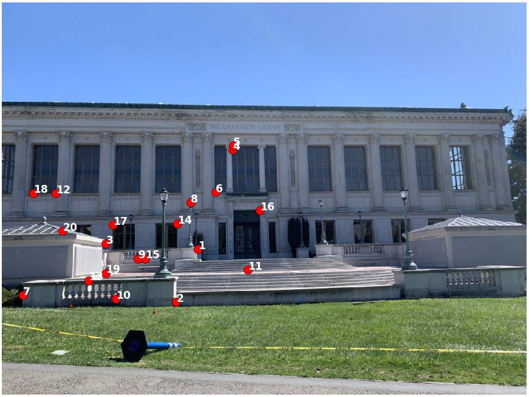

Project 5: [Auto]Stitching Photo Mosaics
By: Alex Yang
Part 1: Image Warping and Mosaicing
This section covers finding homographies, transforming images, and stitching together transformed images to create mosaics.
Recover Homographies
Homographies relate two images of the same planar surface. It is a transformation from one projective space to another, and so it can be written as p' = Hp where H is a 3x3 matrix and p and p' are the projective spaces.
In this part, we recover homographies between two sets of points. We establish p' = Hp for all corresponding points p' and p, and solve for the homography H. Specifically, we want to minimize the loss given by our homography:i

The above can be written as a series of linear equations. The 8x1 vector can be solved using least squares, and to fully recover the homography we add 1 to the end of the vector and reshape it into a 3x3 matrix.

The process of defining correspondence points was done manually by selecting matching locations between images.
Warp the Images
We can now warp images using the recovered homography. Because we are applying a perspective transform, the resulting image will have a different shape than the original. So, we first get the bounding box of the warped image by piping the corners of our original image through the homography. The warped corner points define a trapezoidal region which includes our warped image. We now use inverse mapping of the homography to map the points in the trapezoidal region to points in the original image. Each pixel is sampled using linear interpolation. The homography may map points to have negative values, so horizontal and vertical shifting are also needed to adjust for this.
Image Rectification
Image rectification is the process of applying a homography to an image usually for straightening, but it can also be more generally used to view images from a different perspective, resulting in some pretty cool effects.
The process of doing this is simple. First define some correspondence points on an image — four points usually work well. Next, define correpondence points on where the other correspondence points should map to. Find the homography that relate these two sets of points and warp the original image with the homography.
Here is an example I did to make my pencil pouch appear from a bird's-eye view. On the left is the original image taken from a slant, and on the right is the rectified image.

|

|
Another example — Wheeler Hall in Berkeley.
|
|

|
Making Mosaics
Let's see how we can use our homographies and warp function to create mosaics. I took two photos for each mosaic, rotating the camera along the z-axis in between photos so that I could capture a wider view. Overlapping features in the photos are necessary so that we can define correspondence points between the two images. Example is shown below:
|
|
|
Next, I labeled eight correspondence points between the two pictures. I then found the homography H between the points, warped the second image by H, and stitched the original and warped image together.
In order to stitch the images, I first created a blank canvas in which I could stack the images onto. The warped image goes on first, then the original image on top, shifting the images accordingly before stacking. This essentially completes the process, but leaves some edge artifacts around the overlapping region. I used weighted averaging (feathering) to minimize these artifacts.
I first tried linear blending, which involves using a linearly decreasing weight from 1 to 0 over the overlapping region. Specifically, the pixel value in the overlapping region is determined by rgb = alpha * im1 + (1 - alpha) * im2, where alpha is the weight of the original image's pixel values in the final image for a column in the overlapping region. The weight alpha decreases linearly from 1 to 0 over the columns in the overlapping region for linear blending. This worked well in getting rid of edge artifacts, but also created wedge-like artifacts at the crossing sections. So, instead of a linearly decreasing weight, I tried using a sigmoid function to determine the weight alpha. Now columns closer to the left and right edges of the overlapping region will be influenced even more by the left and right images, respectively. This helped reduce the effect of the wedge artifacts.
Here are the mosaics of Doe Library:

|

|
|
|
More examples:

|

|

|
|

|
|
|

|
What I learned
It was really cool learning how a simple homography can do so much. I think the best part was image rectification because the images really look like they were taken from another perspective even though I just multiplied the image by a homography matrix.
Part 2: Feature Matching for Autostitching
This section covers the process of automatically making mosaics. It heavily draws from "Multi-Image Matching using Multi-Scale Oriented Patches" by Brown et al.
Detecting Corners using Harris Interest Point Detector
In order to find features to use as our correspondence points, we must first detect interest points in the images we want to stitch. We use Harris Interest Point Detector to get all potential interest points. However, we discard any interest points that are within 20 pixels of the image border, for reasons that will be seen in the next section (Extracting Feature Descriptors).
Using the same photos taken of Doe Library and the Campanile, we run the detector and get the following interest points in red:
|
|
|
Adaptive Non-Maximal Suppression (ANMS)
Harris Interest Point Detector gives a great start, but it's time to start filtering out interest points that aren't that interesting. One method is to just take the interest points with the highest Harris values. However, this results in interest points that are heavily clustered together around clearly defined corners. Having interest points that are spacially distributed is preferred because it will help our homography generalize well across the entire image, rather than just a few areas.
|
|
|
In order to get more evenly distributed interest points, we'll use adaptive non-maximal suppression (ANMS) as outlined in Brown et al. ANMS only keeps interest points that are the strongest in it's neighborhood of points. Strength is still determined by Harris value, but ANMS will only choose a few points in a neighborhood so we don't get as much clustering.
In ANMS, each interst point is ranked in decreasing order by it's distance to the closest interest point that is significantly stronger. In other words, a point's suppression radius is determined by the minimum distance to another interest point that has Harris response at least 1/c * h, where c is a robustness parameter in [0,1) and h is the Harris response of the first point. We do this for all points and sort by suppression radius in decreasing order. We then take the top 500 points, for example. This process can be vectorized for efficiency.
|
|
|
Extracting Feature Descriptors
We now extract feature descriptors in preparation for Feature Matching (next section). Each feature descriptor is an axis-aligned 8x8 patch sampled from a larger 40x40 window around an interest point. Basically, we blur the 40x40 window around an interest point with a Gaussian filter, and then downsample to an 8x8 patch. Blurring and downsampling help our features be more robust. We also standardize the descriptor vector (mean=0, std=1) so that the features are invariant to affine changes in intensity.
Here are the descriptors for corresponding points. The patch is from the upper right corner of one of the library windows.
|
|

|
Feature Matching
To match features across images, we use SSD to find the distance between all feature descriptors in one image and all descriptors in the other image. We then use Lowe thresholding to create a match. Lowe thresholding uses the ratio of the errors of the first nearest neighbor and second nearest neighbor. A feature descriptor is only matched to it's nearest neighbor in the other image and if the ratio of the error of the nearest neighbor to the error of the second nearest neighbor is below a threshold. We set this threshold as 0.5, as suggested in Brown et al. We also enforce that the two matched descriptors must be each other's nearest neighbor.
Here are the matched features, labeled. You can see that the process does well for the most part, but there are some incorrect matches.
|
|
|
Random Sample Consensus (RANSAC)
We now use Random Sample Consensus (RANSAC) to robustify our feature matching. Because of the sensitivity to outliers in least squares, incorrect matches (outliers) left from the previous part will throw off our homography calculation if kept in the set of correspondence points. We deploy RANSAC into our autostitching process to remove incorrect feature matches.
RANSAC is an iterative process. In each iteration, we sample four different pairs of matching points, and compute the homography H between them. We then transform every interest point in the first image by H. We now retrieve the set of inliers, which are points that are within one pixel away from their correspondence after being transformed. The set of points returned by RANSAC is simply the largest set of inliers.
Here are the matched features after running RANSAC for 10,000 iterations. These are also the correspondence points we'll use to stitch the two images.
|
|

|
Autostitching Results
This is the resulting image of Doe library after autostitching.
Here are some comparisons. On the top are mosaics stitched using manually labeled correspondences, and on the bottom are autostitched images. Autostitching really helps unblur the mosaics, probably because my manual correspondence points weren't very precise.

And some fun images:
What I learned
I think RANSAC was the coolest thing about this part. I like the idea that it seperates the structure from the noise. Even if there's much more noise, all the noise is different so the structural elements can still be found by RANSAC.